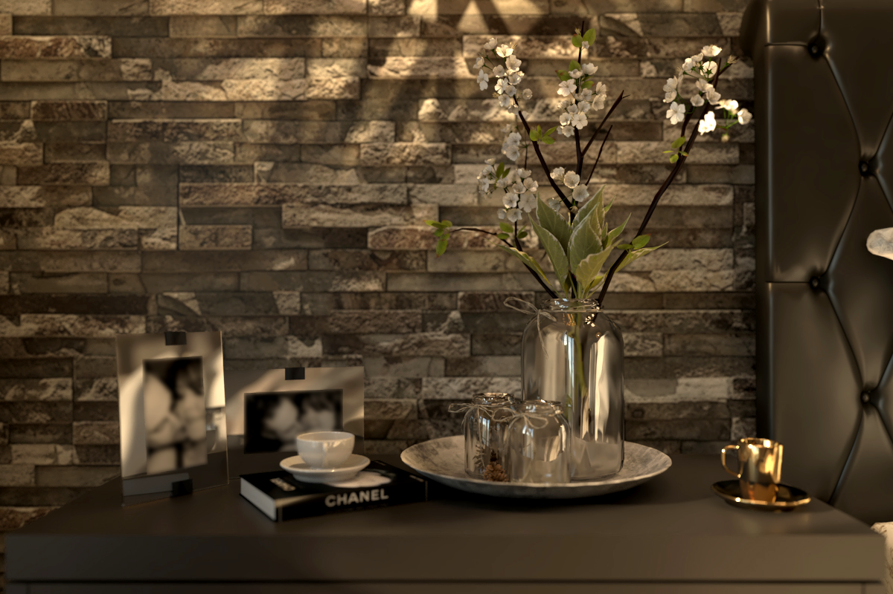
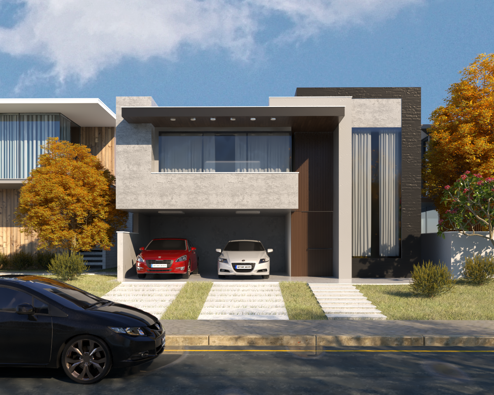

VRay para SketchUp
Descrição do Projeto
Produção de imagens de cenas de projetos arquitetônicos e de interiores empregando o conhecimento obtido no curso de VRay para SketchUp, trabalhando as iluminações natural e artificial, texturas e diferentes materiais, configurações de câmera e demais parâmetros, visando o maior fotorrealismo possível.
As modelagens foram disponibilizadas no software SketchUp e renderizadas utilizando o plugin do VRay versão 3.6.
 
Voltar ao portfólio